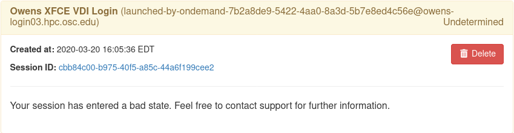

LinuxHost
The LinuxHost adapter facilitates launching jobs immediately without using a batch scheduler or resource manager. Use cases for this non-traditional job adapter include:
Interactive work on login nodes, such as remote desktop or IDE
Providing an option to start an interactive session immediately, without any queue time imposed
Using OnDemand on systems that do not have a supported scheduler installed
The adapter pieces together several tools to achieve behavior similar to what a scheduler offers:
sshconnects from the web node to a configured host such as a login node.
tmuxSpecially named
tmuxsessions offer the ability to rediscover running jobstimeoutis used to set a 'walltime' after which the job is killed
pstreeis used to detect the job's parent
sinitprocess so that it can be killedsingularitycontainerization provides a PID namespace without requiring elevated privileges that ensures that all child processes are cleaned up when the job either times out or is killed
Note
There are many recipes for managing processes on arbitrary Linux hosts, and we will be exploring others in future development of this adapter.
The adapter and target host can be configured to either:
Enable launching any software installed on the target host
Enable launching a specific application container
The cluster configuration can be shared between both strategies and each interactive app plugin individually configured to use the appropriate strategy.
Launch any software on target host
Install on the target host a Singularity base OS image matching the OS of the target host. In the cluster configuration example below we use
/opt/ood/linuxhost_adapter/centos_7.6.sifas the target host is running CentOS7.See Cluster Configuration below to add the cluster configuration file for the target host
This base image is used to provide an unprivileged PID namespace when launching the app. To make the rest of the software installed on the host available to launch within the image, most/all of the host file system is bind-mounted into the running container. For this reason many existing interactive apps will just work when launched by the LinuxHost adapter.
Launch specific application containers
Install the specific application containers on the target host.
See Cluster Configuration below to add the cluster configuration file for the target host. Specify a default application container for
singularity_image:andsingularity_bindpath:even if you will override it.In each interactive app plugin, specify the image to launch and host directories to mount by setting the
nativeattributesingularity_containerandsingularity_bindpath. In interactive app plugins these attributes may be set in the filesubmit.yml. For example:
---
batch_connect:
template: vnc
script:
native:
singularity_bindpath: /fs,/home
singularity_container: /usr/local/modules/netbeans/netbeans_2019.sif
Cluster Configuration
A YAML cluster configuration file for a Linux host looks like:
# /etc/ood/config/clusters.d/owens_login.yml
---
v2:
metadata:
title: "Owens"
url: "https://www.osc.edu/supercomputing/computing/owens"
hidden: true
login:
host: "owens.osc.edu"
job:
adapter: "linux_host"
submit_host: "owens.osc.edu" # This is the head for a login round robin
ssh_hosts: # These are the actual login nodes
- owens-login01.hpc.osc.edu
- owens-login02.hpc.osc.edu
- owens-login03.hpc.osc.edu
site_timeout: 7200
debug: true
singularity_bin: /usr/bin/singularity
singularity_bindpath: /etc,/media,/mnt,/opt,/run,/srv,/usr,/var,/users
singularity_image: /opt/ood/linuxhost_adapter/centos_7.6.sif
# Enabling strict host checking may cause the adapter to fail if the user's known_hosts does not have all the roundrobin hosts
strict_host_checking: false
tmux_bin: /usr/bin/tmux
with the following configuration options:
adapterThis is set to
linux_host.submit_hostThe target execution host for jobs. May be the head for a login round robin. May also be "localhost".
ssh_hostsAll nodes the submit_host can DNS resolve to.
site_timeoutThe number of seconds that a user's job is allowed to run. Distinct from the length of time that a user selects.
debugWhen set to
truejob scripts are written to$HOME/tmp.UUID_tmuxand$HOME/tmp.UUID_singfor debugging purposes. Whenfalsethose files are written to/tmpand deleted as soon as they have been read.singularity_binThe absolute path to the
singularityexecutable on the execution host(s).singularity_bindpathThe comma delimited list of paths to bind mount into the host; cannot simply be
/because Singularity expects certain dot files in its containers' root; defaults to:/etc,/media,/mnt,/opt,/run,/srv,/usr,/var,/users.singularity_imageThe absolute path to the Singularity image used to create PID namespaces; expected to be a base distribution image with no customizations.
strict_host_checkingWhen
falsethe SSH options includeStrictHostKeyChecking=noandUserKnownHostsFile=/dev/nullthis prevents jobs from failing to launch.tmux_binThe absolute path to the
tmuxexecutable on the execution host(s).
Warning
This adapter was designed with the primary goal of launching installed
software on the target host, not launching specific application containers.
As a result, even if your use of this adapter is reserved to launching
specific application containers, you currently must specify a value in the
cluster configuration for singularity_bindpath and singularity_image, even
if these will be specified in each interactive app plugin.
Note
In order to communicate with the execution hosts the adapter uses SSH in
BatchMode. The adapter does not take a position on whether authentication
is performed by user owned password-less keys, or host-based authentication;
however OSC has chosen to provide host based authentication
to its users.
Enforce resource limits on the target host
By default the adapter does not limit the user's CPU or memory utilization, only their "walltime". The following are two examples of ways to implement resource limits for the LinuxHost Adapter using cgroups.
Approach #1: Systemd user slices
With systemd it is possible to manage the resource limits of user logins through each user's slice. The limits applied to a user slice are shared by all processes belonging to that user, this is not a per-job or per-node resource limit but a per-user limit. When setting the limits keep in mind the sum of all user limits is the max potential resource consumption on a single host.
First update the PAM stack to include the following line:
session required pam_exec.so type=open_session /etc/security/limits.sh
This goes into a file used by the sshd PAM configurations which on CentOS/RHEL default to /etc/pam.d/password-auth-ac and needs to be included in the proper position, after pam_systemd.so. Also set pam_systemd.so to required:
1session optional pam_keyinit.so revoke
2session required pam_limits.so
3session required pam_systemd.so
4session required pam_exec.so type=open_session /etc/security/limits.sh
5session [success=1 default=ignore] pam_succeed_if.so service in crond quiet use_uid
6session required pam_unix.so
7session optional pam_sss.so
The following example of /etc/security/limits.sh is used by OSC on interactive login nodes. Adjust MemoryLimit and CPUQuota to meet the needs of your site. See man systemd.resource-control
#!/bin/bash
set -e
PAM_UID=$(id -u "${PAM_USER}")
if [ "${PAM_SERVICE}" = "sshd" -a "${PAM_UID}" -ge 1000 ]; then
/usr/bin/systemctl set-property "user-${PAM_UID}.slice" \
MemoryAccounting=true MemoryLimit=64G \
CPUAccounting=true \
CPUQuota=700%
fi
Approach #2: libcgroup cgroups
The libcgroup cgroups rules and configurations are a per-group resource limit where the group is defined in the examples at /etc/cgconfig.d/limits.conf. The following examples limit resources of all tmux processes launched for the LinuxHost Adapter so they all share 700 CPU shares and 64GB of RAM. This requires setting tmux_bin to a wrapper script that in this example will be /usr/local/bin/ondemand_tmux.
Example of /usr/local/bin/ondemand_tmux:
#!/bin/bash
exec tmux "$@"
Setup the cgroup limits at /etc/cgconfig.d/limits.conf:
group linuxhostadapter {
memory {
memory.limit_in_bytes="64G";
memory.memsw.limit_in_bytes="64G";
}
cpu {
cpu.shares="700";
}
}
Setup the cgroup rules at /etc/cgrules.conf:
*:/usr/local/bin/ondemand_tmux memory linuxhostadapter/
*:/usr/local/bin/ondemand_tmux cpu linuxhostadapter/
Start the necessary services:
sudo systemctl start cgconfig
sudo systemctl start cgred
sudo systemctl enable cgconfig
sudo systemctl enable cgred
Troubleshooting
Undetermined state
Your job can be in an 'undetermined state' because you haven't listed all the ssh_hosts.
ssh_hosts should be anything the submit_host can DNS resolve to. You submit your
job the submit_host, but OnDemand is going to poll the ssh_hosts for your job and
in this case, your running a job on a node that OnDemand is not polling.
# /etc/ood/config/clusters.d/no_good_config.yml
---
v2:
job:
submit_host: "owens.osc.edu" # This is the head for a login round robin
ssh_hosts: # These are the actual login nodes
- owens-login01.hpc.osc.edu
- owens-login02.hpc.osc.edu
- # I need 03 and 04 here!
In this example I've only configured hosts 01 and 02 (above), but I got scheduled on 03 (you can tell by the 'job name') so the adapter now cannot find my job.

The job just exists with no errors.
This is where turning debug on with debug: true is really going to come in handy.
Enable this, and you'll see the two shell scripts that ran during this job. Open the file ending in
_tmux and you'll see something like below.
export SINGULARITY_BINDPATH=/usr,/lib,/lib64,/opt
# ... removed for brevity
ERROR_PATH=/dev/null
({
timeout 28800s /usr/bin/singularity exec --pid /users/PZS0714/johrstrom/src/images/shelf/centos.sif /bin/bash --login /users/PZS0714/johrstrom/tmp.73S0QFxC5e_sing
} | tee "$OUTPUT_PATH") 3>&1 1>&2 2>&3 | tee "$ERROR_PATH"
Export the SINGULARITY_BINDPATH so you're sure to have the same mounts, and run this
/usr/bin/singularity exec ... tmp.73S0QFxC5e_sing command manually on one of the ssh hosts. This will
emulate what the linuxhost adapter is doing and you should be able to modify and rerun until you fix
the issue.
D-Bus errors
Maybe you've seen something like below. Mounting /var into the container will likely fix the issue.
Launching desktop 'xfce'...
process 195: D-Bus library appears to be incorrectly set up; failed to read machine uuid: UUID file '/etc/machine-id' should contain a hex string of length 32, not length 0, with no other text
See the manual page for dbus-uuidgen to correct this issue.
D-Bus not built with -rdynamic so unable to print a backtrace
Again, mounting var fixed this error too.
Starting system message bus: Could not get password database information for UID of current process: User "???" unknown or no memory to allocate password entry
Note
Subsequent versions of the adapter are expected to use unshare for PID namespaces as the default method instead of Singularity. Singularity will continue to be supported.